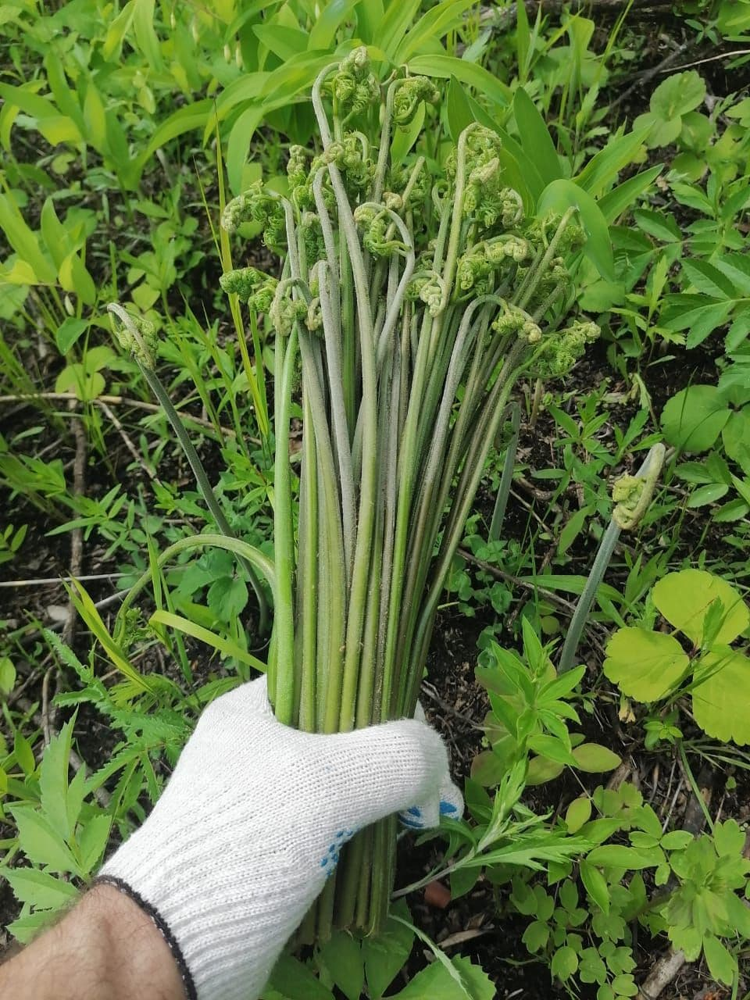
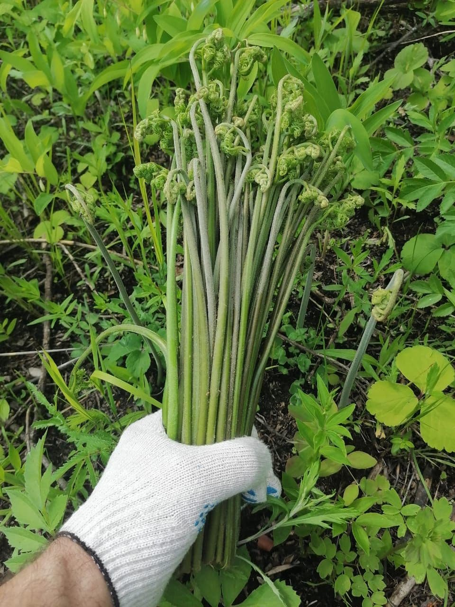

О нас:
Наша компания является крупным заготовителем соленого и сушеного папоротника Орляк Дальневосточный.
Заготовкой папоротника наша компания занимается с 2014 года. За эти годы накоплен большой опыт как в технологии и ньюансах заготовки, так и опыт поставок нашей продукции по всему Дальневосточному региону, а также в Северную, Южную и Центральную часть России
Место сбора и заготовки – экологически чистый район Дальнего Востока – Хабаровский край, район им.Лазо, таежный поселок в пойме горной реки Хор, где природа сохранена в первозданном виде. Сбор и заготовка осуществляется в одном месте, поэтому с момента сбора до момента засолки проходит не более 8 часов, что обеспечивает сохранность всех полезных свойств папоротника.
Наш папоротник имеет зеленый цвет и фисташковый запах, что говорит о строжайшем соблюдении технологии посола. Он максимально полезен и вкусен после приготовления, имеет привлекательный внешний вид
Заготовка соленого папоротника начинается каждый год в мае-июне и осуществляется трехкратным посолом в концентрированном растворе соли. Такая технология обеспечивает максимальное качество и увеличивает срок хранения папоротника от 1 до 2 лет. При этом температуру хранения лучше держать постоянной, но это сделать несложно, так как соленый папоротник хранится при диапазоне температур от -30°С до +30°С. В год наше предприятие может заготовить от 30 до 100 тонн. Соленый папоротник продаем в пластиковой пищевой таре по 20 кг. и более мелкой расфасовке. Сухой папоротник упаковываем в картонные коробки по 3 кг.
Дальневосточный папоротник Орляк – уникальное целебное растение. Употребление его в пищу благоприятно сказывается на процессах роста укрепляя кости детей, способствует улучшению обмена веществ, повышает иммунитет и работоспособность, нормализует кровяное давление,улучшает пищеварение, помогает при лечении малокровия, способствуя выработке красных кровяных телец, оберегает здоровье глаз, защищает от сердечно-сосудистых заболеваний, снижает «плохой» холестерин а также выводит радионуклеиды из организма.
Выбирая нашу компанию в качестве поставщика уникального целебного продукта – соленого или сушеного папортника вы получаете надежного партнера, гарантию качества продукта, его высокие вкусовые качества, стабильность поставок.
Компания наименование: ИП Павлова Г.И.
Юридический адрес: Россия, г.Хабаровск, ул.Воронежская 40-56
Контакты:
Евгений – директор +79098410641
Галина – бухгалтер +79147774577
E-mail: pavlovagalina0987@yandex.ru